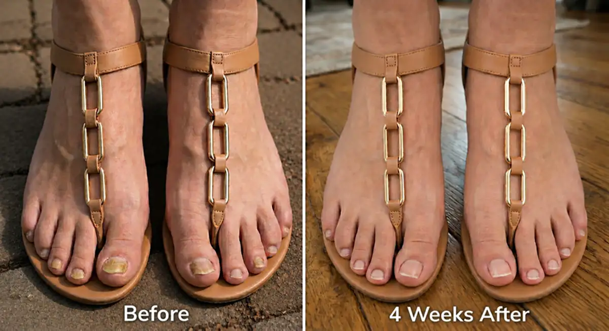
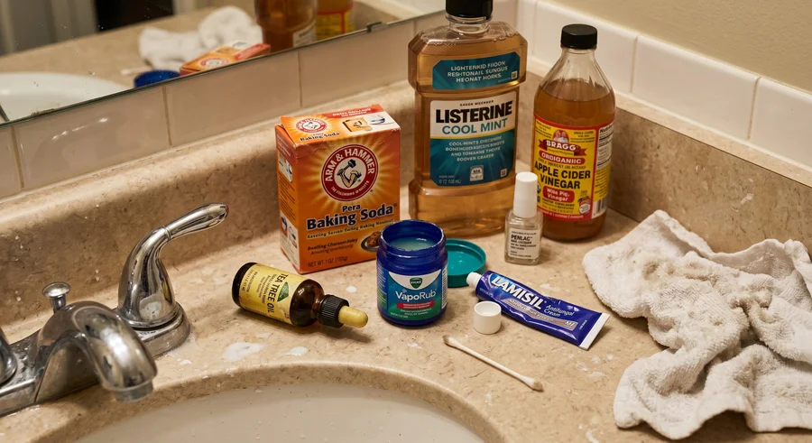
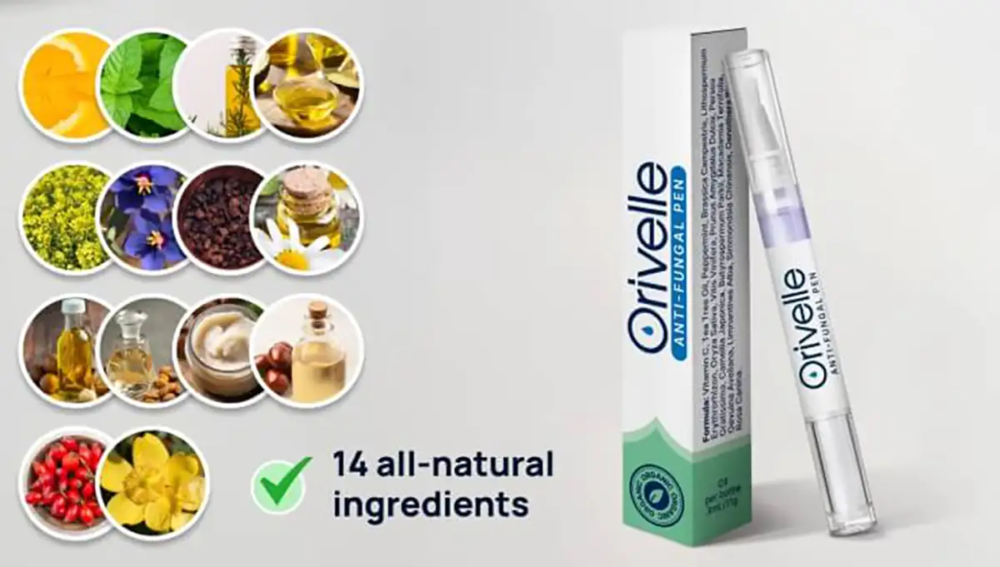
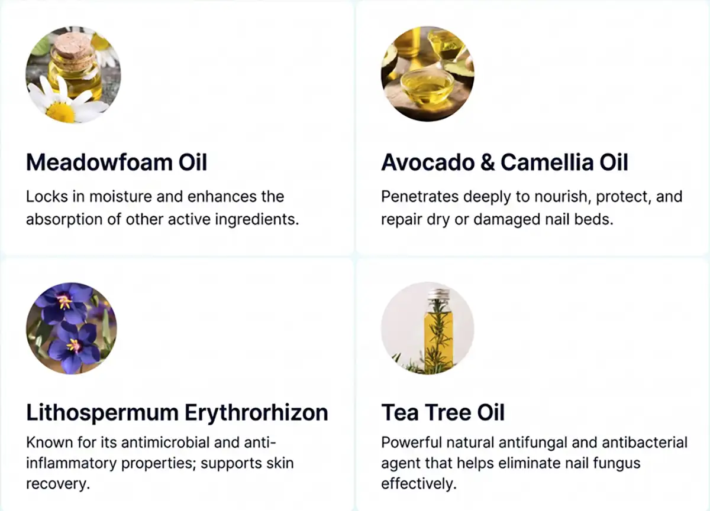
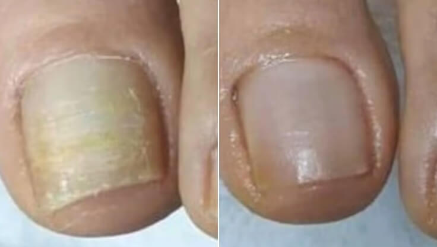
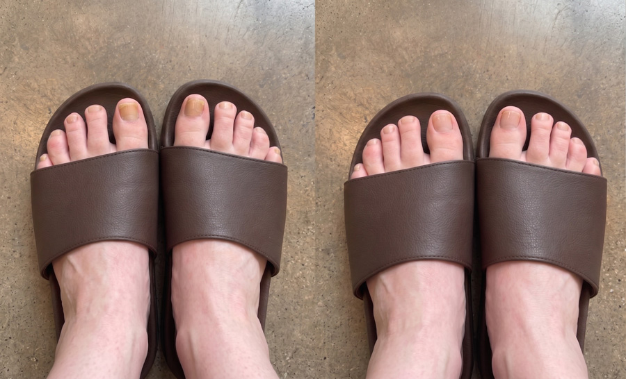
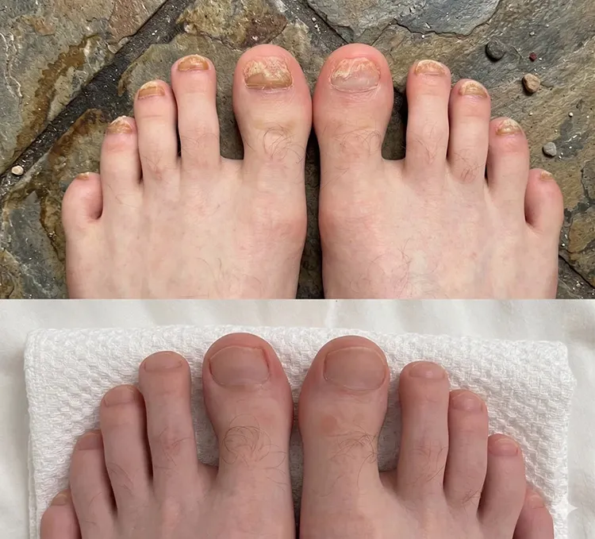
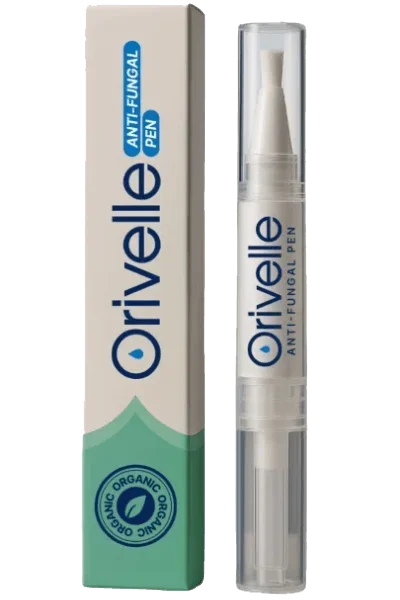
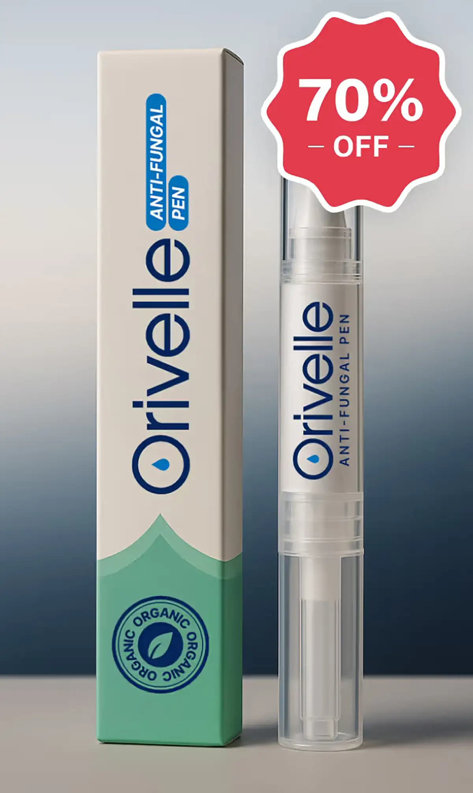

Mon médecin disait qu'il faudrait jusqu'à un an pour traiter ma mycose tenace. Je l'ai soignée en 4 semaines avec CECI
J'ai essayé 9 "remèdes" différents en 5 ans, et la mycose revenait TOUJOURS. Je suis débarrassée des champignons depuis plus de 18 mois – et la solution était d'une simplicité déconcertante ! Je vais vous montrer exactement ce que j'ai fait.

Je m'appelle Camille, j'ai 37 ans, et pendant 5 ans, j'ai lutté contre une mycose des ongles gênante dont je n'arrivais pas à me défaire.
Je pense l'avoir attrapée lors d'une pédicure dans un salon de manucure. Je l'ai ignorée pendant deux ans, pensant qu'elle partirait d'elle-même…
Mais ce ne fut pas le cas.
Au contraire, elle s'est propagée à l'orteil suivant, puis au suivant, jusqu'à ce que je ne puisse plus faire semblant. J'étais horrifiée.
C'était affreux de regarder mes propres pieds – j'avais l'impression d'être malpropre.
Toute ma vie a commencé à tourner autour de la dissimulation de mes pieds. À la plage, je les enterrais dans le sable. À la maison, je portais des chaussettes toute l'année…
Je refusais les pédicures entre amies en inventant des excuses. Je choisissais mes tenues en fonction des chaussures qui couvriraient mes orteils – jamais les jolies sandales ouvertes que je voulais vraiment porter.
Réparer mes ongles est devenu mon obsession, alors j'ai passé les 5 années suivantes à TOUT essayer.
Et si vous avez déjà cherché sur Google "comment guérir la mycose des ongles", vous savez de quoi je parle…
Il existe des centaines de "solutions". Des remèdes de grand-mère. Des pilules. Des routines matinales en 20 étapes à suivre avant même de mettre ses chaussures.
C'est un travail à temps plein juste pour essayer de suivre !
Et voici le problème avec la mycose des ongles – vous restez piégé dans ce cycle infernal. Vous entendez parler d'une "nouvelle solution miracle". Vous l'essayez. Ça fonctionne quelques semaines. Puis la mycose revient.
À. Chaque. Fois.
C'est désespérant. Après un certain temps, on commence à croire que cette chose fera partie de nous pour toujours.
Mais la bonne nouvelle est que… ce n'est pas une fatalité.
Il y a UNE chose qui a enfin fonctionné pour moi – elle a nettoyé mes ongles en quelques semaines, pas en plusieurs années, et je l'ai fait en quelques secondes chaque matin chez moi.
Je vais donc vous présenter tout ce que j'ai tenté, ce qui a échoué et pourquoi, afin que vous puissiez ignorer 5 ans de mauvais conseils et passer directement à ce qui peut réellement soigner votre mycose rapidement – et pour de bon.

Les solutions temporaires qui font revenir la mycose (ne perdez pas votre temps avec ça)
Je suis donc allée voir mon médecin traitant, et elle m'a dit qu'il faudrait environ un an pour guérir ma mycose.
La première chose qu'elle m'a prescrite était de la Terbinafine – et ça a vraiment marché. La mycose a visiblement diminué, mes ongles commençaient à redevenir presque normaux, et j'étais tellement heureuse de penser que c'était enfin fini.
Eh bien, je me trompais lourdement !
Moins de 2 semaines après avoir fini les comprimés, les stries jaunes ont commencé à réapparaître sur mon gros orteil. Je me suis assise sur le bord de la baignoire et j'ai pleuré.
C'est là que j'ai commencé à essayer tout le reste…
L'huile de tea tree – Chaque discussion sur les forums, chaque résultat Google ne jurait que par ça. Je l'ai diluée avec de l'huile de coco, je l'appliquais deux fois par jour avec un coton-tige, j'ai été très assidue pendant 4 mois. Mes ongles semblaient un peu mieux. Puis je suis partie pour un long week-end, j'ai oublié le traitement pendant 3 jours, et à mon retour, la mycose était revenue de plus belle.
Le Vicks VapoRub. Ça ramollissait mes ongles et je pensais sincèrement que ça marchait. Puis un matin, j'ai remarqué que la mycose s'était propagée à un troisième orteil.
Les bains au vinaigre de cidre. 20 minutes chaque soir, pendant 6 semaines. Ma salle de bain sentait la friterie. Les ongles semblaient un peu mieux au début, puis plus rien, puis c'est devenu pire.
Les crèmes antifongiques de pharmacie – Canesten, Daktarin, Lamisil – je les utilisais religieusement chaque soir. L'étiquette disait "résultats en 4 semaines". Pour moi, les résultats ont été : absolument rien.
Les bains de bouche (Listerine) – Un autre "miracle" du net. 2 mois de traitement. Tout ce que j'ai gagné, ce sont des pieds bleus et une salle de bain qui sentait le cabinet dentaire.
La pâte de bicarbonate de soude. Après trois semaines, j'avais la peau irritée, aucune amélioration, et je me réveillais avec du bicarbonate dans mes draps.
Le traitement au laser dans une clinique privée. 280 € la séance. J'ai dépensé plus de 1 100 €. La mycose a disparu à environ 60 % après le protocole complet. Six mois plus tard, j'en étais revenue au point de départ.
Le vernis médicamenteux qu'il faut appliquer chaque jour pendant 48 semaines. J'ai tenu 8 mois. La mycose a reculé pendant environ 6 semaines au milieu du traitement. Puis elle est revenue.
Chaque fois que quelque chose échouait, j'entendais la même chose – "donnez-lui plus de temps, soyez plus régulière, il faut persévérer."
Mais je ne pouvais pas m'imaginer passer le reste de ma vie à prendre un médicament qui me rendait malade, ou à frotter des produits sur mes ongles de pieds tous les jours.
Il devait y avoir une meilleure solution. Quelque chose qui fonctionne vraiment, vite, et qui empêche la mycose de revenir.
Et je l'ai trouvée.
Au cours de mes recherches pour une vraie solution, on m'a dirigée vers une experte en soins holistiques de la peau à Paris – le Dr Christine Faure – qui avait obtenu d'excellents résultats avec des cas de mycoses cutanées et unguéales tenaces.
Deux semaines plus tard, j'étais dans son cabinet.
Elle a commencé par m'expliquer quelque chose que je n'avais jamais entendu : la mycose est si difficile à tuer parce qu'elle ne vit pas sur l'ongle – elle vit entre l'ongle et le lit de l'ongle.
Cela signifie que chaque traitement local que j'avais essayé – l'huile de tea tree, le Vicks, le Lamisil, le vinaigre – devait traverser une épaisse couche de kératine – la protéine ultra-dure qui compose l'ongle – pour seulement atteindre le champignon.
Et les médicaments oraux doivent voyager dans tout votre flux sanguin jusqu'aux minuscules vaisseaux à la base de l'ongle avant même de pouvoir commencer à agir.
Les deux sont extrêmement difficiles à réaliser. C'est exactement pourquoi ces traitements semblent fonctionner au début – ils tuent la mycose de surface que vous voyez. Mais les souches résistantes enfouies profondément dans le lit de l'ongle survivent, se multiplient et reviennent plus fortes qu'avant.
Et même quand l'un de ces traitements fonctionne, il est presque impossible de le suivre parfaitement. Les protocoles standards exigent des mois – parfois des années – d'une discipline de fer. Manquez quelques jours, et vous revenez à la case départ.
Pour la première fois en 5 ans, chaque échec prenait soudainement tout son sens.
"Ce dont vous avez réellement besoin," a dit le Dr Faure, "ce sont deux éléments travaillant ensemble."
- D'abord – un système de diffusion capable de pénétrer réellement la plaque de l'ongle. Cela signifie une base d'huile, et non d'eau. L'huile est l'une des seules substances capables de traverser la barrière de kératine pour atteindre le lit de l'ongle en dessous.
- Ensuite – les bons composés antifongiques à l'intérieur de cette huile. La combinaison exacte d'extraits botaniques qui travaillent ensemble pour :
- Pénétrer à travers les ongles même les plus épais
- Combattre la mycose à la racine (pas seulement en surface)
- Aider à restaurer le système de défense naturel de l'ongle
- Aider à prévenir une réinfection permanente
Elle a ouvert un tiroir de son bureau et m'a tendu la solution qui allait régler 5 ans de galère en seulement 4 semaines.

Découvrez Orivelle : Le stylo pour ongles à base de plantes qui élimine définitivement la mycose
Orivelle contient 14 extraits botaniques puissants – chacun sélectionné pour son rôle spécifique dans l\'élimination des champignons, la restauration des ongles abîmés et la protection de la peau environnante.

De plus, de la vitamine C, de la menthe poivrée, de l'huile de colza, de l'huile de pépins de raisin, de l'huile d'amande douce, du beurre de karité, de l'huile de noisette du Chili, du jojoba, de l'onagre et de l'huile de cynorrhodon – tous ces composés puissants travaillent en synergie pour transformer les ongles cassants, jaunes et fissurés en ongles sains et magnifiques.
Orivelle ne se contente pas de tuer la mycose. Il restaure tout ce que le champignon a détruit.
Ce qui rend Orivelle différent :
Crèmes : Restent en surface, ne pénètrent pas l'ongle
Pilules : Attaquent le foie, ne fonctionnent que dans 17 % des cas
Remèdes maison : Trop faibles, résultats inconsistants
Orivelle : Pénètre tout l'ongle, combat la mycose à la racine et aide à prévenir son retour
"Je peux enfin porter des sandales !" – Témoignages réels de clients réels
Marguerite K.
Verified Buyer
“J'ai 67 ans et j'avais une mycose des ongles depuis 12 ans. DOUZE ANS ! J'ai tout essayé, y compris ces horribles pilules qui me rendaient malade. Ma fille a trouvé Orivelle en ligne et me l'a acheté. En 2 semaines, mes ongles ont presque cessé de s'effriter. À la 4e semaine, je pouvais voir un ongle rose et sain pousser à la base. Maintenant, après 3 mois, mes ongles sont presque clairs pour la première fois depuis des années ! Je viens de réserver une pédicure – quelque chose que je n'avais pas fait depuis plus d'une décennie. Merci !”

AVANT – APRÈS (8 SEMAINES) · *Les résultats peuvent varier d'une personne à l'autre. Marguerite K., cliente vérifiée
Léa M.
Verified Buyer
"8 ans de mycose des ongles disparus après 6 semaines de traitement"
Je suis tellement heureuse !! À la 6e semaine, mes ongles de pieds semblaient propres et normaux. Je suis allée m'acheter 3 nouvelles paires de sandales le week-end dernier.

Marc D.
Verified Buyer
"Succès avec Orivelle en seulement 2 mois !!!"
Les ongles repoussent roses et normaux à la base, plus de jaune, plus d'épaisseur. Je vérifie sans arrêt parce que je n'arrive pas à croire que c'est enfin parti. Je recommande ce produit sans hésiter.

Les meilleurs podologues recommandent discrètement ce produit à leurs patients
“Je suis podologue depuis 18 ans. Quand mes patients ont commencé à me montrer leurs résultats avec Orivelle, j'étais sceptique. Mais l'amélioration était indéniable. Je le recommande maintenant aux patients qui ne peuvent pas prendre de médicaments oraux ou qui ont des infections récurrentes. Le taux de réussite est remarquable.” – Dr James T., DPM, Lyon
Dans une étude indépendante sur 500 utilisateurs :
Le rituel simple de 60 secondes qui transforme vos ongles
Utiliser Orivelle est plus facile que de se brosser les dents :
- Étape 1 : Nettoyez et séchez vos ongles
- Étape 2 : Appliquez Orivelle avec le pinceau de précision (comme un vernis)
- Étape 3 : Laissez sécher pendant 60 secondes
Faites cela deux fois par jour. La plupart des gens voient des résultats en 7 à 14 jours.
Pas de limage. Pas de trempage. Pas de désordre.
Comparez les coûts : Orivelle vs traitements traditionnels
Traitement Laser : 500 € – 1 500 € (souvent non remboursé)
Pilules sur ordonnance : 400 € + pour 3 mois (plus tests hépatiques)
Visites chez le podologue : 150 € + par visite (plusieurs séances requises)
Stylo Orivelle : moins de 19,99 € (dure plus de 30 jours)
De plus, Orivelle bénéficie d'une garantie satisfait ou remboursé de 30 jours. Si vous ne voyez pas d'amélioration, vous êtes intégralement remboursé. Sans poser de questions.
Marc K.
Verified Buyer
“Je suis diabétique et mon médecin m'a dit que je ne pouvais pas prendre de médicaments antifongiques oraux. Je luttais contre cette mycose depuis 5 ans avec des crèmes qui n'ont jamais fonctionné. Orivelle a aidé à nettoyer mes ongles en 6 semaines ! Ma femme en a commandé 3 de plus pour ne jamais en manquer.”
Exclusivement pour les visiteurs de notre site, Orivelle sera vendu avec un rabais ! Cliquez sur le bouton "LANCER" et gagnez une réduction ! Bonne chance !

Vérifier la disponibilité et appliquer la réduction →Stock limité avec rabais DISPONIBLE au :
Réservez votre OFFRE EXCLUSIVE avec une remise de 70 % !
ATTENTION : Méfiez-vous des contrefaçons d'Orivelle sur Amazon
En raison de sa popularité, des versions contrefaites d'Orivelle sont apparues en ligne. Ces faux ne contiennent pas les bonnes concentrations botaniques et ne fonctionneront pas.
Achetez uniquement sur le site officiel pour vous assurer d'obtenir la formule authentique avec la garantie de 30 jours.
En raison d'une forte visibilité sur les réseaux sociaux, Orivelle s'écoule rapidement.
Peu de stock restant au prix réduit.
Le prochain arrivage est prévu dans 3 à 4 semaines.
Conçu exclusivement pour tous les âges ! Choisissez votre tranche d'âge et trouvez la meilleure solution pour vous !
Pour les plus de 60 ans
Cliquez ici pour une remise de70 % !
Pour les 40 – 60 ans
Cliquez ici pour une remise de70 % !
Pour les 20 – 40 ans
Cliquez ici pour une remise de70 % !
L'offre spéciale est presque terminée : Économisez jusqu'à 70 %

Save up to 70 % today
Dans le cadre de leur campagne de sensibilisation en ligne, Orivelle offre à nos lecteurs français une remise exclusive :
- 1 Stylo → Économisez 50 %
- Lot de 3 stylos → Économisez 60 % ← MEILLEURE OFFRE
- Lot de 6 stylos → Économisez 70 % (moins de 10 € par stylo !)
Toutes les commandes incluent :
- Livraison GRATUITE (arrive en 2 – 3 jours)
- Garantie satisfait ou remboursé de 30 jours
- Guide de soin des ongles : "Des ongles sains en 30 jours"
Linda S.
Verified Buyer
“N'hésitez pas ! J'ai gaspillé des ANNÉES et des CENTAINES d'euros dans des traitements inefficaces. Orivelle a aidé à nettoyer mes ongles en 8 semaines. J'ai 72 ans et je porte des chaussures ouvertes pour la première fois depuis mes 50 ans !”
Patricia Williams
Il y a 2 heures
Je viens de commander le mien ! Ma sœur utilise ça depuis un mois et ses ongles sont superbes. J'ai hâte d'essayer !
Michael Chen
Il y a 5 heures
Est-ce sûr pour les personnes âgées ? Ma mère a 78 ans et elle traîne ça depuis des années.
Admin Reply: Oui, Orivelle est sans danger pour tous les âges. C'est entièrement naturel, sans produits chimiques agressifs. De nombreux clients de 70 et 80 ans l'utilisent avec succès !
Susan Thompson
Hier
MISE À JOUR : Je l'utilise depuis 6 semaines maintenant. La différence est incroyable ! Pourquoi n'ai-je pas trouvé ça plus tôt ??? Je viens d'en commander 3 de plus pour mon mari.
David Rodriguez
Il y a 2 jours
La réduction fonctionne encore ! J'ai eu 3 flacons pour moins cher que ma dernière ordonnance. Merci pour le partage !
Barbara Lee
Il y a 3 jours
Combien de temps prend la livraison ? Je veux commencer le traitement au plus vite.
Admin Reply: Les commandes sont expédiées le jour même et arrivent en 2-3 jours ouvrés avec la livraison express gratuite !
James Wilson
Il y a 3 jours
Je suis infirmier et j'étais sceptique mais la science derrière est logique. Après 4 semaines, l'ongle de mon gros orteil est presque entièrement net. J'en recommande !